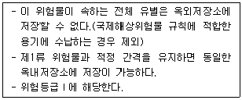
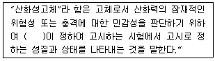
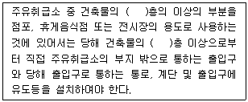

위험물기능장 (2013-07-21 기출문제)
1과목: 임의구분
1. 니트로화합물 중 분자구조 내에 히드록시기를 갖는 위험물은?
- 피크린산
- 트리니트로톨루엔
- 트리니트로벤젠
- 테트릴
(정답률: 81%)

2. 제4류 위험물을 수납하는 운반용기의 내장용기가 플라스틱 용기인 경우 최대용적은 몇 리터인가? (단, 외장용기에 위험물을 직접 수납하지 않고 별도의 외장용기가 있는 경우이다.)
- 5
- 10
- 20
- 30
(정답률: 71%)
3. 과산화벤조일을 가열하면 약 몇 ℃ 근방에서 흰 연기를 내며 분해하기 시작하는가?
- 50
- 100
- 200
- 400
(정답률: 73%)
4. 바닥면적이 150m2 이상인 제조소에 설치하는 환기설비의 급기구는 얼마 이상의 크기로 하여야 하는가?
- 600 cm2
- 800 cm2
- 1000 cm2
- 1500 cm2
(정답률: 81%)
5. 무색, 무취, 사방정계 결정으로 융점이 약 610℃ 이고 물에 녹기 어려운 위험물은?
- NaClO3
- KClO3
- NaClO4
- KClO4
(정답률: 65%)
6. 다음 위험물의 화재 시 알코올포소화약제가 아닌 보통의 포소화약제를 사용하였을 때 가장 효과가 있는 것은?
- 아세트산
- 메틸알코올
- 메틸에틸케톤
- 경유
(정답률: 82%)
7. 방사구역의 표면적이 100m2인 곳에 물분무소화설비를 설치하고자 한다. 수원의 수량은 몇 L 이상 이어야 하는가? (단, 분무헤드가 가장 많이 설치된 방사구역의 모든 분무헤드를 동시에 사용할 경우이다.)
- 30000
- 40000
- 50000
- 60000
(정답률: 67%)
8. 위험물제조소등에 전기설비가 설치된 경우에 당해 장소의 면적이 500m2 이라면 몇 개 이상의 소형수동식소화기를 설치하여야 하는가?
- 1
- 4
- 5
- 10
(정답률: 79%)
9. 과산화수소에 대한 설명 중 틀린 것은?
- 농도가 36.5wt% 인 것은 위험물에 해당한다.
- 불연성이지만 반응성이 크다.
- 표백제, 살균제, 소독제 등에 사용된다.
- 지연성 가스인 암모니아를 봉입해 저장한다.
(정답률: 82%)
10. 하나의 옥내저장소에 칼륨과 유황을 저장하고자 할 때, 저장창고의 바닥면적에 관한 내용으로 적합하지 않은 것은?
- 만약 유황이 없고 칼륨만을 저장하는 경우라면 저장창고의 바닥면적은 1000m2 이하로 하여야 한다.
- 만약 칼륨이 없고 유황만을 저장하는 경우라면 저장창고의 바닥면적은 2000m2 이하로 하여야 한다.
- 내화구조의 격벽으로 완전히 구획된 실에 각각 저장하는 경우 전체 바닥면적은 1500m2 이하로 하여야 한다.
- 내화구조의 격벽으로 완전히 구획된 실에 각각 저장하는 경우 칼륨의 저장실은 1000m2 이하로 유황의 저장실은 500m2 이하로 한다.
(정답률: 74%)
11. 보기의 요건을 모두 충족하는 위험물은?

- 황린
- 글리세린
- 질산
- 질산염류
(정답률: 62%)
12. 다음 중 물보다 가벼운 물질로만 이루어진 것은?
- 에테르, 이황화탄소
- 벤젠, 포름산
- 클로로벤젠, 글리세린
- 휘발유, 에탄올
(정답률: 85%)
13. 고정지붕구조로 된 위험물 옥외저장탱크에 설치하는 포방출구가 아닌 것은?
- Ⅰ형
- Ⅱ형
- Ⅲ형
- 특형
(정답률: 84%)
14. KClO3의 일반적인 성질을 나타낸 것 중 틀린 것은?
- 비중은 약 2.32 이다.
- 융점은 약 240℃ 이다.
- 융해도는 20℃에서 약 7.3 이다.
- 단독 분해온도는 약 400℃ 이다.
(정답률: 60%)
15. 오존파괴지수를 나타내는 것은?
- CFC
- ODP
- GWP
- HCFC
(정답률: 96%)
16. 다음 중 위험물안전관리법령에 근거하여 할로겐화물소화약제를 구성하는 원소가 아닌 것은?
- Ar
- Br
- F
- Cl
(정답률: 89%)
17. 사용전압이 35000V 인 특고압가공전선과 위험물 제조소와의 안전거리 기준으로 옳은 것은?
- 3m 이상
- 5m 이상
- 10m 이상
- 15m 이상
(정답률: 75%)
18. 다음 제4류 위험물 중 위험등급이 나머지 셋과 다른 하나는?
- 휘발유
- 톨루엔
- 에탄올
- 아세트산
(정답률: 77%)
19. 제1종 분말소화약제의 주성분은?
- NaHCO3
- NaHCO2
- KHCO3
- KHCO2
(정답률: 86%)
20. 토출량이 5m3/min 이고 토출구의 유속이 2m/s 인 펌프의 구경은 몇 mm 인가?
- 100
- 230
- 115
- 120
(정답률: 76%)
2과목: 임의구분
21. 다음은 물안전관리법령에서 정한 용어의 정의이다. ( )안에 알맞은 것은?(관련 규정 개정전 문제로 여기서는 기존 정답인 2번을 누르면 정답 처리됩니다. 자세한 내용은 해설을 참고하세요.)

- 대통령
- 소방방재청장
- 중앙소방학교장
- 안전행정부장관
(정답률: 84%)
22. 나트륨에 대한 각종 반응식 중 틀린 것은?
- 연소방정식 : 4Na + O2 → 2Na2O
- 물과의 방정식 : 2Na + 3H2O → 2NaOH + 2H2
- 알코올과의 반응식 : 2Na + 2C2H5OH → 2C2H5ONa + H2
- 액체암모니아와 반응식 : 2Na + 2NH3 → 2NaNH2 + H2
(정답률: 74%)
23. 다음 중 가장 약산은?
- 염산
- 황산
- 인산
- 아세트산
(정답률: 79%)
24. 다음 중 아세틸퍼옥사이드와 혼재가 가능한 위험물은? (단, 지정수량의 10배의 위험물인 경우이다.)
- 질산칼륨
- 유황
- 트리에틸알루미늄
- 과산화수소
(정답률: 66%)
25. Sr(NO3)2의 지정수량은?
- 50 kg
- 100 kg
- 300 kg
- 1000 kg
(정답률: 84%)
26. 「위험물안전관리법 시행규칙」에 의하여 일반취급소의 위치·구조 및 설비의 기준은 제조소의 위치·구조 및 설비의 기준을 준용하거나 위험물의 취급유형에 따라 따로 정한 특례기준을 적용할 수 있다. 이러한 특례의 대상이 되는 일반취급소 중 취급 위험물의 인화점 조건이 나머지 셋과 다른 하나는?
- 열처리작업등의 일반취급소
- 절삭장치등을 설치하는 일반취급소
- 윤활유 순환장치를 설치하는 일반취급소
- 유압장치를 설치하는 일반취급소
(정답률: 78%)
27. 위험물안전관리법령상 위험물의 취급 중 소비에 관한 기준에서 방화상 유효한 격벽 등으로 구획된 안전한 장소에서 실시하여야 하는 것은?
- 분사도장작업
- 담금질작업
- 열처리작업
- 버너를 사용하는 작업
(정답률: 83%)
28. 다음 중 착화온도가 가장 낮은 물질은?
- 메탄올
- 아세트산
- 벤젠
- 테레핀유
(정답률: 59%)
29. 다음 ( )에 알맞은 숫자를 순서대로 나열한 것은?

- 2, 1
- 1, 1
- 2, 2
- 1, 2
(정답률: 89%)
30. 위험물안전관리법령사 옥내저장소에서 위험물을 저장하는 경우에는 규정에 의한 높이를 초과하여 용기를 겹쳐 쌓지 아니하여야 한다. 다음 중 제한 높이가 가장 낮은 경우는?
- 제4류 위험물 중 제3석유류를 수납하는 용기만을 겹쳐 쌓는 경우
- 제6류 위험물을 수납하는 용기만을 겹쳐 쌓는 경우
- 제4류 위험물 중 세4석유류를 수납하는 용기만을 겹쳐 쌓는 경우
- 기계에 의하여 하역하는 구조로 된 용기만을 겹쳐 쌓는 경우
(정답률: 82%)
31. KClO3 운반용기 외부에 표시하여야 할 주의사항으로 옳은 것은?
- “화기·충격주의” 및 “가연물접촉주의”
- “화기·충격주의”, “물기엄금” 및 “가연물접촉주의”
- “화기주의” 및 “물기엄금”
- “화기엄금” 및 “공기접촉엄금”
(정답률: 68%)
32. 다음 중 분해온도가 가장 낮은 위험물은?
- KNO3
- BaO2
- (NH4)2Cr2O7
- NH4ClO3
(정답률: 43%)
33. 인화성 액체위험물을 저장하는 옥외탱크저장소의 주위에 설치하는 방유제에 관한 내용으로 틀린 것은?
- 방유제의 높이는 0.5m 이상 3m 이하로 하고, 면적은 8만m2 이하로 한다.
- 2기 이상의 탱크가 있는 경우 방유제의 용량은 그 탱크 중 용량이 최대인 것의 용량의 110% 이상으로 한다.
- 용량이 1000만리터 이상인 옥외저장탱크의 주위에는 탱크마다 간막이 둑을 흙 또는 철근콘크리트로 설치한다.
- 간막이 둑을 설치하는 경우 간막이 둑의 용량은 간막이 둑안에 설치된 탱크의 용량의 110% 이상이어야 한다.
(정답률: 85%)
34. 제조소등의 건축물에서 옥내소화전이 가장 많이 설치된 층의 소화전의 수가 3개일 경우 확보해야 할 수원의 양은 몇 m3 이상 이어야 하는가?
- 7.8
- 11.7
- 15.6
- 23.4
(정답률: 85%)
35. 50℃, 0.948atm에서 시클로프로판의 증기밀도는 약 몇 g/L 인가?
- 0.5
- 1.5
- 2.0
- 2.5
(정답률: 63%)
36. 다음 중 혼성궤도함수의 종류가 다른 하나는?
- CH4
- BF3
- NH3
- H2O
(정답률: 68%)
37. 다음 중 과염소산칼륨과 접촉하였을 때의 위험성이 가장 낮은 물질은?
- 유황
- 알코올
- 알루미늄
- 물
(정답률: 80%)
38. 0℃, 2기압에서 질산 2mol 은 몇 g 인가?
- 31.5 g
- 63 g
- 126 g
- 252 g
(정답률: 81%)
39. 다음 중 삼황화린의 주 연소생성물은?
- 오산화린과 이산화황
- 오산화린과 이산화탄소
- 이산화황과 포스핀
- 이산화황과 포스겐
(정답률: 79%)
40. 탄화알루미늄이 물과 반응하면 발생되는 가스는?
- 이산화탄소
- 일산화탄소
- 메탄
- 아세틸렌
(정답률: 80%)
3과목: 임의구분
41. Na2O2가 반응하였을 때 생성되는 기체가 같은 것으로만 나열된 것은?
- 물, 이산화탄소
- 아세트산, 물
- 이산화탄소, 염산, 황산
- 염산, 아세트산, 물
(정답률: 80%)
42. 다음 중 1차 이온화에너지가 가장 큰 것은?
- Ne
- Na
- K
- Be
(정답률: 67%)
43. 주어진 탄소 원자에 최대수가 수소가 결합되어 있는 것은?
- 포화탄화수소
- 불포화탄화수소
- 방향족탄화수소
- 지방족탄화수소
(정답률: 79%)
44. 다음 소화설비 중 제6류 위험물에 대해 적응성이 없는 것은?
- 포소화설비
- 스프링클러설비
- 물분무소화설비
- 이산화탄소소화설비
(정답률: 81%)
45. 트리에틸알루미늄이 물과 반응하였을 때 생성물을 옳게 나타낸 것은?
- 수산화알루미늄, 메탄
- 수소화알루미늄, 메탄
- 수산화알루미늄, 에탄
- 수소화알루미늄, 에탄
(정답률: 87%)
46. C6H2CH3(NO2)3 의 제조 원료로 옳게 짝지어진 것은?
- 톨루엔, 황산, 질산
- 톨루엔, 벤젠, 질산
- 벤젠, 질산, 황산
- 벤젠, 질산, 염산
(정답률: 80%)
47. IF5의 지정수량으로서 옳은 것은?
- 50 kg
- 100 kg
- 300 kg
- 1000 kg
(정답률: 88%)
48. 위험물의 운반에 관한 기준에서 정한 유별을 달리하는 위험물의 혼재기준에 따르면 1가지 다른 유별의 위험물과만 혼재가 가능한 위험물은? (단, 지정수량의 1/10을 초과하는 경우이다.)
- 제2류
- 제4류
- 제5류
- 제6류
(정답률: 88%)
49. 금속리튬이 고온에서 질소와 반응하였을 때 생성되는 질화리튬의 색상에 가장 가까운 것은?
- 회흑색
- 적갈색
- 청록색
- 은백색
(정답률: 81%)
50. 운반 시 일광의 직사를 막기 위해 차광성이 있는 피복으로 덮어야 하는 위험물이 아닌 것은?
- 제1류 위험물 중 중크롬산염류
- 제4류 위험물 중 제1석유류
- 제5류 위험물 중 니트로화합물
- 제6류 위험물
(정답률: 69%)
51. NH4H2PO4 57.5kg 이 완전 열분해하여 메타인산, 암모니아와 수증기로 되었을 때 메타인산은 몇 kg 이 생성되는가? (단, P의 원자량은 31 이다.)
- 36
- 40
- 80
- 115
(정답률: 48%)
52. 물과 반응하여 가연성가스를 발생하지 않는 것은?
- Ca3P2
- K2O2
- Na
- CaC2
(정답률: 69%)
53. 산화성액체 위험물의 취급에 관한 설명 중 틀린 것은?
- 과산화수소 30% 농도의 용액은 단독으로 폭발 위험이 있다.
- 과염소산의 융점은 약 –112℃ 이다.
- 질산은 강산이지만 백금은 부석시키지 못한다.
- 과염소산은 물과 반응하여 열을 발생한다.
(정답률: 75%)
54. 다음 중 위험물의 유별 구분이 나머지 셋과 다른 하나는?
- 과요오드산
- 염소화이소시아눌산
- 질산구아니딘
- 퍼옥소붕산염류
(정답률: 62%)
55. 이항분포(Binomial distribution)의 특징에 대한 설명으로 옳은 것은?
- P = 0.01 일 때는 평균치에 대하여 좌·우 대칭이다.
- P ≤ 0.1 이고, nP = 0.1 ~ 10 일 때는 포아송 분포에 근사한다.
- 부적합품의 출현 개수에 대한 표준편차는 D(x) = nP 이다.
- P ≤ 0.5 이고, nP ≤ 5 일 때는 정규 분포에 근사한다.
(정답률: 80%)
56. 제품공저도를 작성할 때 사용되는 요소(명칭)가 아닌 것은?
- 가공
- 검사
- 정체
- 여유
(정답률: 86%)
57. 부적합수 관리도를 작성하기 위해 ∑c = 559, ∑n = 222를 구하였다. 시료의 크기가 부분군마다 일정하지 않게 때문에 u 관리도를 사용하기로 하였다. n=10 일 경우 u 관리도의 UCL 값은 약 얼마인가?
- 4.023
- 2.518
- 0.502
- 0.252
(정답률: 53%)
58. 작업방법 개선의 기본 4원칙을 표현한 것은?
- 충별 – 랜덤 – 재배열 – 표준화
- 배제 – 결합 – 랜덤 – 표준화
- 충별 – 랜덤 – 표준화 – 단순화
- 배제 – 결합 – 재배열 – 단순화
(정답률: 72%)
59. 모집단으로부터 공간적, 시간적으로 간격을 일정하게 하여 샘플링하는 방식은?
- 단순랜덤샘플링(simple random sampling)
- 2단계샘플링(two-stage sampling)
- 취락샘플링(cluster sampling)
- 계통샘플링(systematic sampling)
(정답률: 79%)
60. 예방보전(Preventive Maintenance)의 효과가 아닌 것은?
- 기계의 수리비용이 감소한다.
- 생산시스템의 신뢰도가 향상된다.
- 고장으로 인한 중단시간이 감소한다.
- 잦은 정비로 인해 제조원단위가 증가한다.
(정답률: 91%)